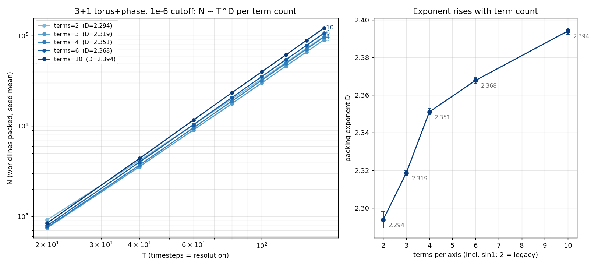

FREQ campaign, 3+1: the packing exponent rises with worldline term count
First campaign of the term-count generalization: the 3+1 engine
learned --terms K (K−1 unique integer wiggle
frequencies per axis, unit slope budget split uniformly on the
simplex so Σ|a·b| = 1 exactly, per-term even-frequency
phases — the viewer's model, ported verbatim; K = 2 is the
legacy single-wiggle model, bit-identical RNG stream). Same T grid,
seeds, and cutoff for every arm, so the term count is the only knob.

- D = 2.294(4), 2.319(1), 2.351(2), 2.368(1), 2.394(2) for terms = 2, 3, 4, 6, 10 — a monotone rise, and the power-law fits get cleaner with more terms (slope-spread 0.052 → 0.017). At terms = 10, D/d = 0.798 ≈ 4/5.
- The headline N ~ T2.33 is therefore not a constant of the model but a property of the two-term worldline space: richer per-axis function spaces pack with a systematically higher exponent.
- The raw jam count is non-monotonic at fixed T (dip at terms = 3: 98k → 90k → 97k → 107k → 122k at T = 160) while D rises monotonically — the dip is a prefactor effect, visible in the left panel as the fan inverting at low T (the legacy model packs more at T = 20).
- Verification: every job ran 3–200× past the 3e7 acceptance window (attempts 1.0e8–7.1e9), 200/200 curves and dumps collected, no failures.
The verification also caught a cross-era artifact worth recording:
the terms = 2 arm reproduces the archived
torus3d_phase_e6 cells with N uniformly +4.4–5.6%
and ~2× the attempts. Cause: engines before the 07-06
pipelining rework pushed the post-adaptation batch into the
acceptance-stop window, overstating window attempts ~2×, so
pre-07-06 campaigns effectively stopped at ~2e-6 rather than the
requested 1e-6. The offset is T-independent — old exponents
stand, old N prefactors sit ~5% low. Today's data is the first to
honor the cutoff exactly.
Takeaway: the packing-number exponent has a function-space knob. The
2+1 sweep (freq2d_e6, running) tests whether the trend
is dictionary-robust; the corrdim pass over these dumps will test
whether the spatial dimension of the matter slices moves
with terms or stays pinned at 3.